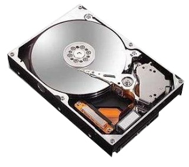
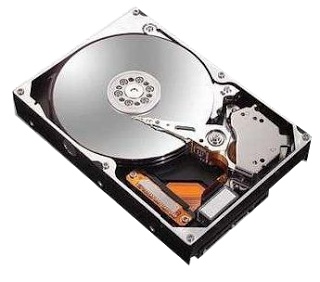

Verifica la vida que le queda a tu disco duro

Hoy me gustaría mostrar algo importante a hacer regularmente con los HDD’s: pedirles que me digan si están viejos y muriendo, o si aún están en la plenitud su mocedad.
Cómo? Pues para ello existe S.M.A.R.T., es el acrónimo de Self Monitoring Analysis and Reporting Technology (Tecnología de Análisis y Reporte Auto Monitorizado).
Esta tecnología la implementan los discos duros actuales (aunque no es una tecnología tan vieja tampoco).
Con este sistema es posible evitar desastres de perdidas de datos por fallos del disco duro pues nos proporciona mucha información valiosa de diagnostico, además de que nos dirá si el mismo se considera en peligro de muerte.
Para revisar la S.M.A.R.T. del HDD lo podemos hacer con ayuda de nuestra amiga la BIOS (hay algunas que no pueden), pero nosotros lo vamos a hacer desde nuestro SO favorito: GNU! Con su secuaz Linux.
Echaremos mano de las smart monitoring tools (herramientas de monitorización smart) smartmontools. Las instalamos de los repositorios de nuestra distribución:
Arch: pacman -S smartmontools
Debian/Ubuntu: apt-get install smartmontools
Fedora: yum install smartmontools
Una vez instaladas obtendremos un informe de nuestro HDD ejecutando:
# smartctl -H -c -A -i /dev/***
Donde *** será nuestro HDD, sda por ejemplo, con esto obtendremos algo así (mi HDD):
Al final podrán ver lo más interesante: cada unos de estos atributos pueden tener valores entre 253 - 1 donde 1 es el peor estado, los mejores valores (HDD optimo) son entre 253 - 100 Además en (type) nos dice como se considera (según el value).
Si el campo dice pre-fail, nuestro HDD en dicho aspecto (type) podría fallar en cualquier momento, o en caso de un old_age, el HDD nos dice que esta viejito.
Como pueden ver mi HDD estará dando sus vueltas por algún tiempo más, pero conviene tener otro a la mano.
PD: Si el HDD tiene el S.M.A.R.T. Desactivado el software smartctl nos lo dirá cuando intentemos usarlo, así que para activarlo hacemos:
smartctl -s on -i /dev/sda

Hoy me gustaría mostrar algo importante a hacer regularmente con los HDD’s: pedirles que me digan si están viejos y muriendo, o si aún están en la plenitud su mocedad.
Cómo? Pues para ello existe S.M.A.R.T., es el acrónimo de Self Monitoring Analysis and Reporting Technology (Tecnología de Análisis y Reporte Auto Monitorizado).
Esta tecnología la implementan los discos duros actuales (aunque no es una tecnología tan vieja tampoco).
Con este sistema es posible evitar desastres de perdidas de datos por fallos del disco duro pues nos proporciona mucha información valiosa de diagnostico, además de que nos dirá si el mismo se considera en peligro de muerte.
Para revisar la S.M.A.R.T. del HDD lo podemos hacer con ayuda de nuestra amiga la BIOS (hay algunas que no pueden), pero nosotros lo vamos a hacer desde nuestro SO favorito: GNU! Con su secuaz Linux.
Echaremos mano de las smart monitoring tools (herramientas de monitorización smart) smartmontools. Las instalamos de los repositorios de nuestra distribución:
Arch: pacman -S smartmontools
Debian/Ubuntu: apt-get install smartmontools
Fedora: yum install smartmontools
Una vez instaladas obtendremos un informe de nuestro HDD ejecutando:
# smartctl -H -c -A -i /dev/***Donde *** será nuestro HDD, sda por ejemplo, con esto obtendremos algo así (mi HDD):
Al final podrán ver lo más interesante: cada unos de estos atributos pueden tener valores entre 253 - 1 donde 1 es el peor estado, los mejores valores (HDD optimo) son entre 253 - 100 Además en (type) nos dice como se considera (según el value).
Si el campo dice pre-fail, nuestro HDD en dicho aspecto (type) podría fallar en cualquier momento, o en caso de un old_age, el HDD nos dice que esta viejito.
Como pueden ver mi HDD estará dando sus vueltas por algún tiempo más, pero conviene tener otro a la mano.
PD: Si el HDD tiene el S.M.A.R.T. Desactivado el software smartctl nos lo dirá cuando intentemos usarlo, así que para activarlo hacemos:
smartctl -s on -i /dev/sda